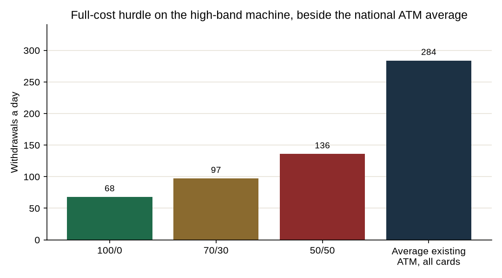

Feasibility study · October 2026
Filling stations and malls are tested as busy sites. The published traffic can clear a machine only if the withdrawals are other banks’ cards and the machine actually gets them. No site file shows that yet.
Verdict. Do not roll out by site type. Filling stations and malls are the right places to measure, and they are the wrong places to assume. A high-band recycler at a 70/30 split still needs about 61 withdrawals a day to cover cash costs and about 97 to cover full cost. The average existing Nigerian ATM does about 284 withdrawals a day, so a site that already behaves like that average has the traffic. A new machine gets the ₦500 only on other banks’ cards, and malls and many stations already have a bank ATM. Parks and markets have no national count. The human change point is the only small cheque, and its rent and union levy were not found. Cash-in kiosks still do not pay.
The founder’s view is that filling stations and malls are high-traffic, and that they should be tested rather than waved away. This paper does that. It keeps the v5 machine. The high band lands at ₦23.72m. The cheaper China band lands at ₦14.59m. Deployer income is the off-site surcharge, at most ₦500 per ₦20,000 block. The ₦100 is not CashEase income. At a 70/30 split the high band covers cash costs at 61 withdrawals a day and full cost at 97. The 100/0 full-cost line is 68. The 50/50 line is 136. Those thresholds do not change because the forecourt is a filling station. Only the number of paying withdrawals changes.
Two other formats are priced for sites that cannot carry a ₦23.72m machine. A cash-in kiosk has no surcharge. On the labelled VTpass stack from v5 it takes in ₦378,000 a year and loses ₦2.29m of cash against street costs of ₦2.67m. A human change point uses the brief’s franchise fee of ₦150,000 to ₦300,000 and a 70/20/10 split. This paper assigns 70% to the attendant, 20% to CashEase and 10% to the host. That assignment is a reading of the brief, not a contract that was found. The change fee is the ₦100 assumption from the earlier studies. It is not a CBN charge.
No published series gives withdrawals per day at a Nigerian filling station, mall, supermarket, motor park or market. The paper therefore does not say how many sites clear. It says what would have to be true, and where a ten-machine count could find out.
Filling stations. NMDPRA’s 2025 downstream fact sheet puts registered retail outlets at approximately 22,681, with 256 product depots and more than 25,000 tanker trucks.1,2 IPMAN’s depot chairmen said in April 2024 that the association’s members operate over 30,000 stations.3 Those two figures are not added. The regulator’s count is the one used as the national stock. DAPPMAN is a depot association. The depot count is 256, not a retail-station count.
MEMAN’s 2024 member data, which is a subset, counts 3,293 retail fuel stations and gives the only zone split found.4
| Zone | MEMAN member stations | Largest state in that zone |
|---|---|---|
| South West | 1,392 | Lagos 722 |
| South East | 173 | Enugu 53 |
| South South | 458 | Rivers 141 |
| North Central | 529 | Abuja 200 |
| North West | 467 | Kano 140 |
| North East | 274 | Adamawa 78 |
Company counts that could be tied to a filing or a named official: TotalEnergies Marketing Nigeria’s 2025 financial statements say the retail business has a network of 511 service stations.5 MRS Oil Nigeria’s 2024 annual report says about 140 company-owned outlets and about 264 third-party outlets.6 Mele Kyari told a House committee in September 2023 that NNPC Retail was in control of over 900 fuel stations, and that before the OVH deal the company owned 48 stations plus affiliates.7 The 2022 announcement of the OVH deal said the purchase would add over 380 stations in Nigeria and Togo, on a journey toward 1,500. The 1,500 figure is a target.8 Ardova and Conoil appear in secondary pieces with counts that do not match each other. Those counts are not used. NIPCO’s profile in the MEMAN report says about 250 branded outlets.4
Malls. No national census of shopping malls was found. ICSC was searched and did not yield a Nigeria mall total that this paper will treat as official. Named centres, not a population, include Ikeja City Mall, The Palms, Novare Lekki, Jabi Lake Mall and others that turn up in landlord and press descriptions. Ikeja City Mall’s own description says it has bank ATMs.9
Supermarkets. Nairametrics on 30 March 2025 ranked chains by store counts it said were on company websites: Bokku 124, Addide 44, Market Square 36, Justrite 31, Shoprite 26, FoodCo 22, Jendol 14, Spar 13, Roban 9, Prince Ebeano 8.10 The ten sum to 327. Prince Ebeano’s eight stores were in Abuja and Lagos. A separate Ebeano count was not in that ranking. A July 2026 Nairametrics piece says Justrite has up to 40 stores, Market Square more than 40, Prince Ebeano 9, and Bokku over 150, and it says Bokku’s ownership could not be confirmed.11 The March ranking is the one used as a stock. Premium Times describes Shoprite closures in Kano, Abuja, Ibadan and Ilorin, so 26 is not a live operating count.12 This is a chain list, not every supermarket in Nigeria.
Motor parks. No national census was found. Lagos State’s commissioner for transportation said in November 2024 that the state had 30 parks in its book and well over 100 that had not been regulated, and that well over 6,000 people come into Lagos daily.13 A 2017 survey cited by PPIAF and LAMATA identified 145 inter-state bus parks in Lagos across 39 areas, including Ojota 6, Jibowu 8, Mile 2 8 and Ojuelegba 6.14 Utako is in Abuja. No count for Utako was found. LASPARK is the Lagos parks-and-gardens agency. It is not the motor-park register. An older academic interview put NURTW in Lagos at 220 branches, with ten to twenty units in a branch, each running a park. That is an interview, not a register, and it is not multiplied into a national total.15
Markets. No national or state census of markets was found. Balogun, Alaba, Computer Village, Onitsha Main Market, Ariaria, Kurmi, Kantin Kwari, Wuse and Bodija are real places. None of them came with a published trader count or a published footfall in the sources read for this paper. They are not given a number.
The stock of active ATMs in the first half of 2024 was 16,714.16 ATM withdrawals in the first half of 2025 were ₦36.34 trillion and 858.80 million transactions.17 Dividing the transactions by 181 days, the length of 1 January to 30 June, and then by 16,714 machines, gives about 284 withdrawals a day on the average existing ATM. The two published totals also imply an average ticket of about ₦42,315. The 181-day divisor and the mixing of a 2024 machine stock with 2025 volume are labelled. The average is real enough to test the founder’s claim. It is not a count at a filling station.

At 70/30, full cost on the high band is 97 withdrawals a day. That is about 34% of the national average. If a new machine captured a whole average ATM’s traffic, and about one in three of those withdrawals paid the ₦500 cap, the hurdle would be met. On-us withdrawals pay nothing to the deployer. The ₦100 never does. A station or a mall that already has the landlord bank’s ATM will send that bank’s cards through as on-us. The average of 284 is therefore an upper picture of traffic, not a forecast of CashEase income.
Ikeja City Mall is the one mall with a published shopper figure from a party that owned it. Actis, which exited in 2015, said the mall attracts up to 800,000 shoppers a month, and that opening day in December 2011 was 45,000 visitors.18 Spreading 800,000 over an assumed 30-day month is about 26,667 people a day. Full-cost break-even at 70/30 is one withdrawal for every 275 of those visitors, or 0.36%. A 2019 exhibition rate card, reproduced on a document site rather than by the mall, says an average of 655,000 shoppers a month.19 A 2025 advertising blog says over 35,000 visitors a week.20 The three figures do not agree. The Actis figure is the one used in the arithmetic because it is the owner’s, and it is old. Even on that old high figure, the machine works only if roughly four in a thousand visitors take cash from this machine, at the cap, on another bank’s card. No mall ATM report was found to show whether that happens. Ikeja already advertises bank ATMs inside the building.9
No vehicles-per-day figure for Nigerian filling stations was found. The founder’s belief that stations are busy is not contradicted by a census, because the census of vehicles was not published. It is also not confirmed. EFInA’s 2023 access survey does say something about cash in general. Among bank users, cash deposits and withdrawals are among the main transactions for 95%. Cash was still how 87% of adults mainly received income, up from 85% in 2020. And 97% of adults used cash to pay for goods and services.21 The survey does not split those answers into malls, stations, parks or markets. NIBSS and CBN publish channel totals, not site types. Deployed POS terminals were 5.90 million at the end of March 2025.22 A busy-agent blog anecdote of 80 to 100 transactions a day is not a NIBSS mean.23
Bank ATMs are already a stated feature of Ikeja City Mall. Large malls are where banks put machines because the landlord can offer power, security and a crowd. A second machine is competing with that gallery. If the gallery is the cash-providing bank’s own machine, that bank’s customers are on-us and the ₦500 does not arise. The off-site cap applies to a machine that is not on a bank’s premises. A mall is off the bank’s premises. It is not an empty site.
Filling stations are the same shape of problem at forecourt scale. Total, NNPC Retail and MRS already operate hundreds of outlets. Many bank programmes put ATMs on dealer forecourts. A published count of those ATMs was not found, so this paper does not invent a share. The planning point is the one that can be checked on a visit: if a station already has a bank ATM, CashEase is the second machine.
POS agents are everywhere the 5.90 million terminals reach, including the shops inside stations and the stalls in markets. They take transfers and cash-out under the agent rules. A machine cannot be filed as an agent. Counsel on the October 2025 guidelines say non-human machines are barred as agents.24 A human change point can be a person. A recycler cannot.
Host money is the gap. No Nigerian ATM host-rent tariff, and no revenue-share percent for a mall landlord or a station dealer, was found. v5’s rent assumption of ₦1.80 million a year sits inside the high-band street cost of ₦5.78m and is not a quote from Ikeja or from NNPC Retail. NURTW’s Lagos role, in the interview cited above, is collecting dues from drivers and negotiating with other actors in the park. A levy on a change booth was not stated. The 10% host share in the human-point arithmetic is the brief, not that interview.
The machine rows are the v5 high band. They are the same at a station, a mall, a park or a market. Site type does not change depreciation. Street cost is ₦5.78m. Full cost is ₦9.17m. The bank carries cash and cash-in-transit, as in v5. Effective days are 270. One withdrawal is one ₦20,000 block at the ₦500 cap, and every withdrawal pays.
| Split | Withdrawals a day | Cash profit | IRR | Payback | NPV at 28% |
|---|---|---|---|---|---|
| 70/30 | 60 | -₦114,995 | Not defined | Not within 7 years | -₦24.05m |
| 70/30 | 120 | ₦5.56m | 14.1% | 4.3 years | -₦7.40m |
| 70/30 | 200 | ₦13.12m | 52.4% | 1.8 years | ₦14.80m |
| 100/0 | 120 | ₦10.42m | 39.7% | 2.3 years | ₦6.87m |
| 50/50 | 200 | ₦7.72m | 26.1% | 3.1 years | -₦1.06m |
The cheaper band, ₦14.59m, has a 70/30 full-cost break-even of 73 withdrawals a day. At 120 a day that band cleared 28% in v5. The listing range is wide enough that the invoice decides the base case. This paper still plans on the high band until a proforma says otherwise.
The human point, at a ₦100 change fee, pays the attendant ₦1.13m a year at 60 transactions a day, ₦2.27m at 120, and ₦3.78m at 200. CashEase’s 20% is ₦324,000, ₦648,000 and ₦1.08m. The host’s 10% is a tenth of the gross. If the franchise fee is income to CashEase and CashEase buys nothing else, the present value of one booth is positive. That result leaves out rent, float, union dues and the ₦25 million office. Ten booths at 120 transactions a day give CashEase ₦6.48m a year before the office. The office assumption is ₦25 million. The booths do not carry it. Whether the attendant can pay for a pitch out of ₦2.27m is not knowable until a park names the rent.
The kiosk does not get a different answer in a mall or a market. Its income is commissions, not the surcharge. The loss of ₦2.29m a year is the v5 high-band kiosk on the labelled stack. Footfall does not fix a format that does not sell withdrawals.
None have been counted, because none have been measured. The national stocks are not a pass list.
By zone, the only honest split is MEMAN’s station map. The South West has 1,392 member stations, 722 of them in Lagos. The North Central has 529, 200 of them in Abuja. The North East has 274. MEMAN’s own text offers security and lower activity as a possible reason for the thin northern and eastern counts. That is a reason to measure in Lagos and Abuja first. It is not a finding that a Kano station fails the hurdle. Kano was not measured.
| Site | Format to test | Format to leave |
|---|---|---|
| Filling station | One recycler, only where no bank ATM is already dispensing | Kiosk. Human booth on a fuel forecourt. |
| Mall | One recycler if the lease allows a second, off-site machine | A chain order. A kiosk beside the bank gallery. |
| Large supermarket | Treat as a mall | A recycler in a small mart. |
| Small supermarket | Nothing until a change-fee test works elsewhere | A ₦23 million machine. |
| Motor park | Human change point, attendant keeps 70% | A recycler, until a park count clears 97. |
| Market | Same human point, after the park test | A recycler or a kiosk on an uncounted site. |
The sequence is a measurement, not a map of 22,681 forecourts. Month-one candidates are filling stations in Lagos and Abuja that a visit shows do not already have a bank ATM, plus one or two malls whose landlord will say in writing whether an ATM exclusivity exists. Parks come in as human booths, not as machines. Markets wait. The North East waits. Supermarket chains are not a year-one landlord.
The measurement set priced here is 12 high-band recyclers: ten stations and two malls. Capex is ₦279.11m. Year 0, including the opening-office assumption, is ₦320.91m. At 70/30 and 60 withdrawals the fleet’s annual cash is -₦26.98m and the value at 28% is -₦400.15m. At 120, annual cash is ₦41.06m, the return is -2.7%, and the value is -₦200.31m. At 200, the return is 36.4% and the value is ₦66.13m. The set is worth buying only if the count is expected to land near 200 other-bank withdrawals, or the invoice comes in at the low band and the count lands near 120. It is not worth buying to discover a 60.
Funding for those 12 machines is equity, unless the sponsor bank pays half the invoice and still supplies the cash. v5 showed that halving the cheque on a 70/30 split at 120 withdrawals lifts the return and still leaves it under 28%. Franchisee capital fits the human booth, where the cheque is ₦150,000 to ₦300,000, and does not fit the recycler. No vendor rate was found. A ₦50 billion network is not a result of these site stocks.
Stations. Licence conditions described from the old DPR site rules include a pump at least 15 metres from the road edge, at least 400 metres between stations, a standby generator, and fire equipment.25 Those rules govern the station. They do not grant or refuse an ATM. No NMDPRA sentence was found that places a cash machine inside or outside the hazardous area. A recycler full of notes, next to fuel, is a theft and fire problem the model’s ₦1.44 million security assumption does not price. The generator is a reason uptime may be better than at a park. It is not a reason to delete the power cost until the dealer agrees to supply it.
Malls. The binding document is the landlord’s lease: rent, service charge, ATM exclusivity, and who insures the machine. None of those clauses was published for Ikeja or for any other mall. Power and guards are why malls are operable. They are also why a bank is often already there.
Parks. Lagos is accrediting interstate parks and said the unions were in the room. The public-transport owners’ representative said the union had not reached a consensus.13 A booth that the union has not accepted does not get a queue. Cash-in-transit at an open park is harder than at a mall. The human format keeps less cash in a machine and more cash in a person’s hands, which is a different theft risk, not a smaller one.
Markets. The same union and theft issues, plus no landlord who can sign for the whole market. A single stall is a host. The rest of the market is not a contract.
Rules that apply everywhere. A recycler is an off-site ATM of the sponsor bank, or it is an independent deployment with prior written CBN approval and a bank that provides the cash.26 It is not an agent. The surcharge cap can be revised. EFInA’s cash findings say people still pay in cash. They do not say they will pay ₦500 to a new machine when a bank ATM or a POS agent is ten steps away.
Filling stations. The founder is right that this is a high-traffic candidate, and right that it should be tested. The regulator counts about 22,681 outlets, the major brands already cover hundreds to about 900, and the average existing ATM in the country does about 284 withdrawals a day, which is enough traffic to clear a ₦23.72m machine if enough of those withdrawals pay the cap. The founder is not yet right that the stations are a network. No station was shown to be free of a bank ATM, and no station was shown to deliver 97 other-bank withdrawals to a new deployer. Ordering for the 22,681 would be the opposite of a fair test.
Malls. The founder is right that a crowd the size Actis described at Ikeja can spare 97 withdrawals without anyone noticing. Four in a thousand of that old monthly figure would do it. The founder is not yet right that malls are open sites. The published description of Ikeja includes bank ATMs, the shopper figures disagree with each other by a wide margin, and no national mall list exists. One or two malls are a fair test. A mall strategy is not.
Supermarkets. Large stores are malls in smaller clothes and get the same answer. The hundreds of small chain outlets in the March 2025 ranking do not get a recycler. They also do not get a kiosk on the commission maths.
Motor parks. Cash is plausible and unmeasured. The format that matches the evidence is a human booth with a small fee, in Lagos, where a register exists and the state is already forcing parks into accreditation. A recycler at Ojota or Ojuelegba is a guess.
Markets. Same as parks, with less paper. Do not start there.
Gate 1. The sponsor bank confirms in writing that a forecourt and a mall shop floor are off-site, that the bank will supply cash, and what happens to the bank’s own cards. If those cards are free, the test has to count only other banks.
Gate 2. A visit sheet for candidate stations: bank ATM already there or not, generator or not, dealer willing to host, and a rent or revenue share written down. Drop any station that already dispenses for a bank.
Gate 3. One mall landlord letter on exclusivity and rent. If the letter says the anchor bank has the ATM right, that mall is closed.
Gate 4. A proforma under the high band. Ten station machines and two mall machines are the ceiling for the year, and only if Gates 1 to 3 are open. At 120 withdrawals and 70/30 those 12 machines still miss 28%. Buy them to measure, and stop the second order unless the count is near 200 on the high band or near 120 on a low-band invoice.
Gate 5. Human booths are a separate test. Ten attendants, Lagos parks that are in the state’s book, fee ₦150,000 to ₦300,000, split written as 70/20/10. Stop if the attendant cannot cover the pitch, or if the union blocks the booth. Do not add markets in this year.
The twelve months: counsel and the bank in month 1; station visits and one mall letter in month 2; proforma and NIBSS papers in months 3 and 4, and no shipment before the certificates the May 2024 NIBSS note requires; install in months 5 to 8; publish the weekly count of paying withdrawals; decide in months 9 to 12. A pass is a count above the full-cost line for the signed split. Anything else is a stop. Kiosks stay off the order.
High-band and low-band costs, the 270-day year, the ₦500 cap and the 28% hurdle are the v5 model, read from its results file and not rebuilt. Average withdrawals a day = 858,800,000 / 181 / 16,714. Average ticket = 36.34 trillion / 858.80 million. Ikeja daily crowd = 800,000 / 30. Conversion = full-cost break-even / that crowd.
Human gross = withdrawals stand-in, here called transactions, × 270 × 100. CashEase takes 20%. The attendant takes 70%. The host takes 10%. The twelve-machine year 0 uses the v5 office assumptions: 40,000,000 plus 150,000 a machine at the start, and 25,000,000 plus 50,000 a machine a year. Recompute from model/site_model.py.
End of study. The v3, v4 and v5 files are unchanged.